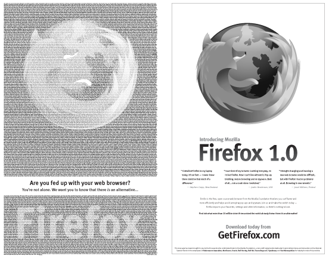
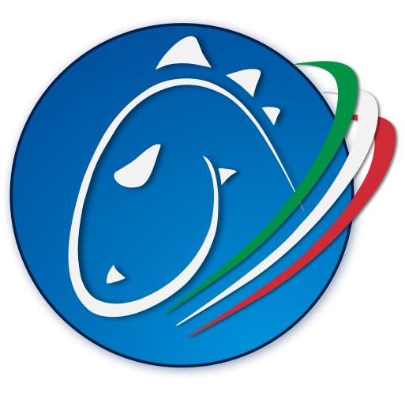

La storia, il progetto e la comunità
Chi sono
- Francesco Lodolo (nickname: flod)
- 2004: inizio come volontario
- 2005: co-fondatore dell’Associazione Italiana Supporto e Traduzione Mozilla
- 2007: responsabile della localizzazione italiana di Firefox
- 2012: presidente dell’associazione italiana
- 2013: membro del team l10n-drivers in Mozilla
Un po’ di storia
Mozilla nasce nel 1998, quando Netscape rilascia il codice sorgente della propria suite.
Netscape chi?
Netscape
Fondata nell’aprile del 1994 da Jim Clark (ex SGI) e Marc Andreessen (ex NCSA) come Mosaic Communications Corporation.
In ottobre viene rilasciato il browser Mosaic Netscape 0.9.
A dicembre, con la versione 1.0, il nome del browser verrà cambiato in Netscape Navigator, e l’azienda stessa diventerà Netscape Communications.
In pochi mesi raggiunge quote di mercato oltre il 70%. All’inizio del 1995 rappresenta lo standard de-facto dei browser.
Netscape in borsa
Nell’agosto del 1995 Netscape viene quotata in borsa.
Al termine del primo giorno di quotazioni ha un valore di 2,9 miliardi di dollari.
2.900.000.000 $
(a soli 14 mesi dalla fondazione)

Microsoft
Il World Wide Web ha un potenziale economico, come sfruttarlo?
Internet Explorer
Nell’agosto del 1995 rilascia Internet Explorer 1.0, basato su Spyglass Mosaic, all’interno di un pacchetto a pagamento (Windows 95 Plus! Pack) che include il browser e il supporto al protocollo TCP/IP.
Ma non è sufficiente per battere la concorrenza di Netscape Navigator.
In ottobre rilascia la versione 2.0, gratuitamente, cambiando drasticamente le regole del gioco.
Il modello commerciale
Nel 1995 i browser si pagano, spesso venivano distribuiti su CD-ROM come parte di una Internet Suite.
Con IE 2.0 tutto cambia. Netscape diventerà ufficialmente gratuito solo nel gennaio 1998.
La 1° guerra dei browser
Questo periodo è noto come First Browser War.
Il periodo 1995-1997
Microsoft e Netscape continuano a creare nuove versioni dei propri browser.
Nel 1996 Netscape prova a puntare il target enterprise e differenziare la propria offerta con la creazione di una suite di prodotti, Netscape Communicator 4.0
Le sorti del “conflitto” cambiano drasticamente con Internet Explorer 4.0, quando Microsoft decide di integrare il browser e distribuirlo con Windows (ottobre 1997).
La fine di Netscape
All’inizio del 1998 Netscape rilascia il codice sorgente di Netscape Navigator 4.0 e dà vita al progetto Mozilla.
A novembre dello stesso anno viene acquisita da AOL per 4,2 miliardi di dollari, Internet Explorer diventa il browser dominante.
AOL chiuderà Netscape nel 2003, licenziando gran parte dei dipendendenti, anche se altre versioni del browser vedranno la luce fino al febbraio 2008 (Netscape Navigator 9).
La nascita di Mozilla
Mozilla era il nome in codice di Netscape Navigator 1.0
Mozilla = Mosaic Killer
23 febbraio 1998
Netscape crea Mozilla Organization per coordinare lo sviluppo di Mozilla Application Suite.
31 marzo 1998
È considerata la data di lancio ufficiale di Mozilla: il codice sorgente del browser diventa disponibile nei termini di una licenza open source, l’organizzazione inizia l’attività pubblica.
La 1° era di Mozilla
- Vengono sviluppate tecnologie core: XUL, Gecko.
- Nasce la comunità globale.
- Stretta collaborazione con entità commerciali.
- Vengono sviluppate policy ancora oggi in vigore (module system).
Eppure Mozilla è un fallimento: rappresenta la sconfitta dei prodotti Open Source nei confronti dei prodotti commerciali.
Il dominio di Microsoft
Nel 2001 esce il famigerato Internet Explorer 6.
Nel 2002 Internet Explorer raggiunge una quota di mercato del 96%
Nel 2003 Microsoft annuncia di voler legare le nuove versioni del browser agli aggiornamenti del sistema operativo (IE7 + Windows Vista), salvo poi cambiare idea più tardi.
La 2° era di Mozilla
Che cosa sta facendo Mozilla mentre Microsoft domina il mondo dei browser?
We took the technology, and applied a maniacal focus to turn Open Web technologies into a product and user experience that was compelling to users. Make the product come first, and the users come first. The result of this process was Firefox.
Un nuovo browser
Settembre 2002: mentre Microsoft raggiunge il 96% degli utenti, Mozilla rilascia la versione 0.1 di un nuovo browser, basato su tecnologie Gecko e XUL, destinato a rivoluzionare il Web.
Mozilla Foundation
Il 15 luglio 2003 AOL esce di scena, creando una organizzazione non-profit con un patrimonio iniziale di 2 milioni di dollari.
9 novembre 2004
Viene rilasciata la versione 1.0 di Firefox (ex Phoenix, ex Firebird).

In occasione di Firefox 1.0 viene lanciata una campagna sul The New York Times, con i nomi di oltre 10.000 donatori.
Mozilla Corporation
Il 3 agosto 2005 viene fondata Mozilla Corporation.
La nuova società è completamente posseduta da Mozilla Foundation, che mantiene la proprietà e gestione di marchi registrati e altri diritti intellettuali.
Non è possibile per un’azienda esterna acquisire quote di MoCo, tutti i profitti vengono reinvestiti nel progetto Mozilla.
Al contrario della fondazione è una società soggetta a tassazione. Questo permette maggiore libertà nell’individuare fonti di finanziamento.
Guinness dei primati
Nel 2008 Firefox è stato scaricato da 8.002.530 persone in un solo giorno, stabilendo un record nel Guinness dei primati per il maggior numero di download di un software nell’arco di ventiquattro ore.
Il mondo cambia
Mozilla riesce a realizzare un prodotto amato da centinaia di milioni di persone in tutto il mondo.
Trova il modo di sostenersi economicamente (non semplice per un progetto Open Source).
Genera competizione:
- Apple Safari (2002)
- Google Chrome (2008)
Ma non solo: cambia l’ambiente tutto intorno (cloud computing, mobile).
La 3° era di Mozilla
- Firefox OS (2013)
AdvertisingContent discovery- Tracking Protection
- Community
- …
La missione di Mozilla
To ensure that the Internet is a global public resource, open and accessible to all.
Il manifesto Mozilla
https://www.mozilla.org/about/manifesto/
La visione di Mozilla
- Un Internet che metta le persone al primo posto.
- Un Internet dove ciascuno di noi è padrone della propria esperienza online.
- Un Internet dove ciascuno di noi si sente in controllo, sicuro e indipendente.
Prodotti
Trovare un compromesso tra “Open Web Choices” e “Consumer Appeal”.
Perché consumer appeal? Per promuovere gli Open Standard servono quote di mercato.
Product is building something that people not only want, but love. Build products not for other companies, but for people. We need to work with partners, at the same time without losing the focus on serving the users.
La comunità Mozilla
La comunità rappresenta una parte fondamentale delle attività di Mozilla sin dall’inizio (1999-2000), prima ancora della nascita di Mozilla Foundation.
A fronte di circa 1.000 dipendenti, esistono decine di migliaia di volontari in tutto il mondo. Si occupano di localizzazione, sviluppo, documentazione, perfino IT.
Programmi per i volontari
REPS: nato con l’idea di supportare i volontari che desiderano diventare rappresentanti ufficiali di Mozilla in una regione.
FSA (Firefox Student Ambassador): rivolto a studenti, insegnanti e amministratori scolastici per diffondere Mozilla all’interno di scuole e università.
Ma, ancora più importante non serve essere parte di un gruppo per dare il proprio contributo: bastano un po’ di tempo e desiderio di partecipare.
Perché contribuire?
Possibilità di fare esperienza su un progetto reale, utilizzato da centinaia di milioni di utenti, con dimensioni che difficilmente incontrerete nel vostro futuro lavorativo.
Possibilità di interagire con sviluppatori ed esperti di livello mondiale.
Possibilità di conoscere e interagire con culture diverse.
Mozilla in Italia
La storia
La comunità muove i primi passi nel 2003 come MozDoesIT
http://members.xoom.virgilio.it/mozdoesit/
Nel gennaio 2004 il gruppo diventa Mozilla Italia e passa al dominio attuale
mozillaitalia.org
http://www.mozillaitalia.org/home/2004/01/14/mozillaitaliaorg/
Il 7 maggio 2005 nasce ufficialmente l’Associazione Italiana Supporto e Traduzione (5 soci fondatori).
Attualmente ci sono 7 persone che si occupano di localizzazione, 5/6 che si occupano esclusivamente del supporto sul forum.
Il futuro
Andare oltre localizzazione e supporto.
Coinvolgere altri volontari già attivi in Italia.
Trovare forze nuove.
Image Credits
- Mozilla head logo: https://commons.wikimedia.org/wiki/File:Mozilla_dinosaur_head_logo.png
- Netscape logo: https://en.wikipedia.org/wiki/File:Netscape_classic_logo.png
- TIME cover: http://content.time.com/time/covers/0,16641,19960219,00.html
- Windows 95 logo: https://blogs.windows.com/windowsexperience/2012/02/17/redesigning-the-windows-logo/
- Mozilla over IE logo: http://www.engadget.com/2014/05/10/history-of-netscape/
- Mozilla Lizard: http://www.davetitus.com/mozilla/
- David vs Goliath: http://marksurman.commons.ca/2014/12/18/davidgoliathempire/
Image Credits
- NY Times ad: https://blog.mozilla.org/press/2004/12/mozilla-foundation-places-two-page-advocacy-ad-in-the-new-york-times/
- Guiness World Record: https://www.flickr.com/photos/9345516@N06/2656085252/